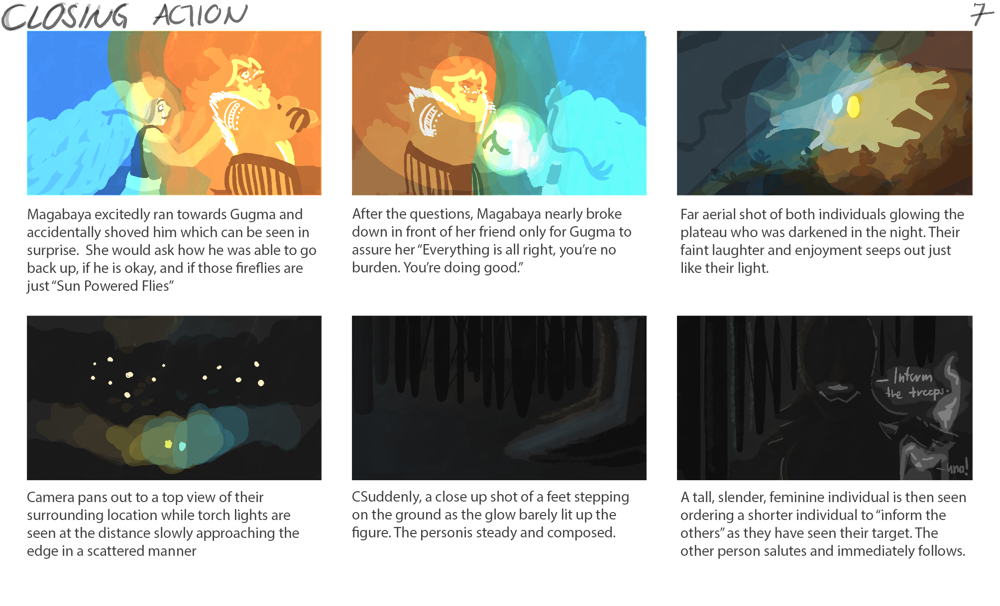

Character Designing: THE FIRST
Second Major Project I have ever done personally and academically.
Submitted as my Midterm FINAL requirement for Digital Illustration
during my first year of college.
Project Overview
Have a sneak peek on my Novel: A Vine's Timely Bloom!
An interesting story scoped between our Sunbearer Gugma with his newly appointed friend, Magabaya
This is a continuation of my past few projects, and at that point, it was snowballing
continuously, I made a design for Magabaya which is a supposed contrasting character of
Gugma, a Vine Lady with a really fiery spirit. This is more of a little heartfel interaction
between the two aspiring leaders of the Nagtubo Race
Work Process
The boarding process was a really challenging part of my journey in designing
Coming up with the story was the easy part, what made it hard was the designing process
As much as I loved designing, which I had done effectively in the singles for my OC
as well as the dynamic poses, and to bring out the challenge of value-sketching
being able to quickly manage all the panels was a lengthy task.
At first it was a total of 36 panels, not until my story was too detailed for only
a few frames! Story is the most valued part of the characters! Not knowing them
would hinder their expression and development. Imagine seeing your character, of
course you will imagine a huge variety of interpretations. and Storywise, giving your
own with utmost sincerity and originality can be unexpected and exciting.
I truly loved the process even though it was hectic. Passion and Efficiency can work
against each other a lot of times.
Reflection
Looking back, this project, like I already said, is an essential part to push me become
an even better artist. Determination fired me up to continue push through the immense
pressure of finsihing the overall work in a short span of time. I have integrity to give
all the best I can do to make things the way I see them so others can enjoy my vision.
Looking back, I realized I changed a lot more than what I usually thought. I still have a long way to go.